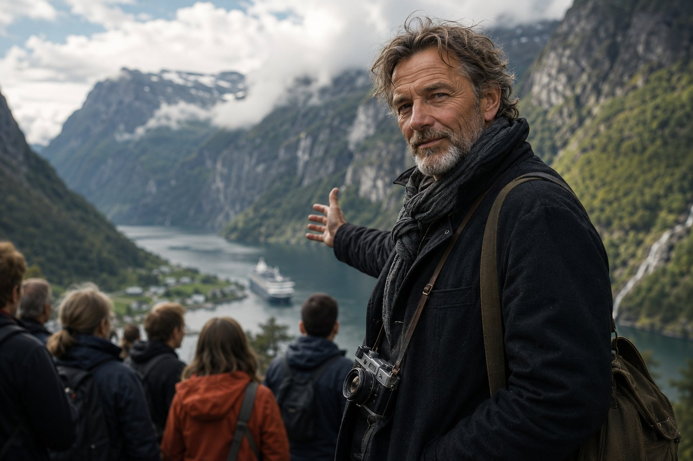

SOFATRAVEL · NORSKE GUIDER
Velg din guide. Sett deg godt. La deg føres gjennom Norges skjulte historier — via chat og stemme, 24/7.
VELG DIN GUIDE
GRAND LOOP NORWAY · RUTER

GRAND LOOP NORWAY
Norges fremste rundtur — 869 km, 17 etapper langs fjord, fjell og kyst
SØK VIDEOER